Simplify the Boolean expression  .
.
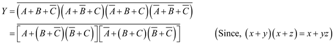
The number of PMOS transistors required for pull-up network is,
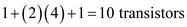
Redraw the pull-up network for active-high output of odd-parity checker.
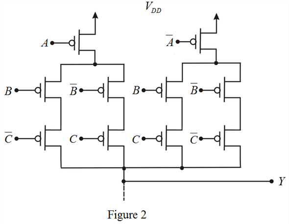
The output is high when an odd number of ones exist in the input.
Draw the truth table for three-input odd-parity checker.
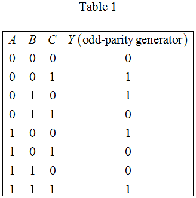
From Table 1, the Boolean expression for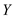is,
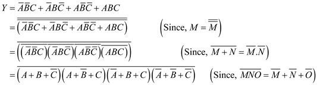
Thus, the Boolean expression for three-input odd-parity checker is,
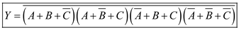.
Draw the pull-up network for active-high output of odd-parity checker.
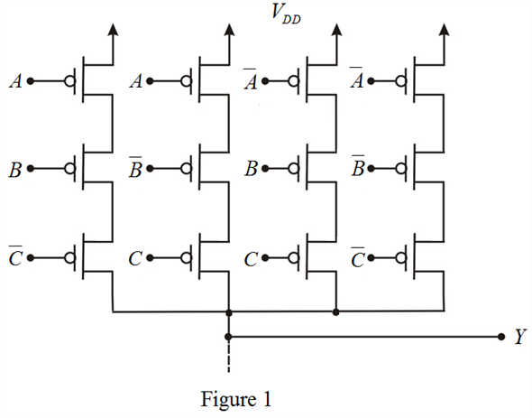
Simplify the Boolean expression .
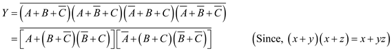
The number of PMOS transistors required for pull-up network is,
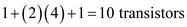
Redraw the pull-up network for active-high output of odd-parity checker.
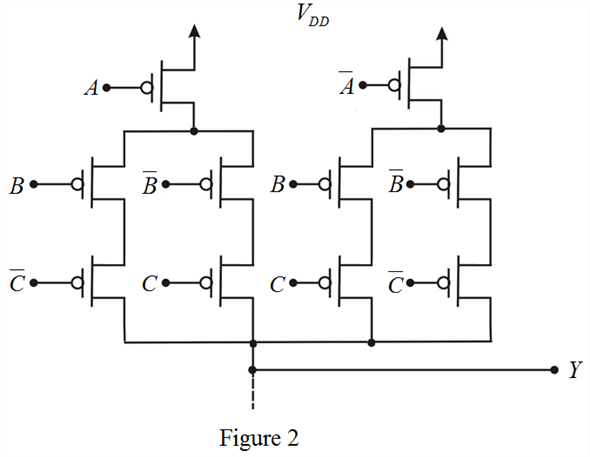
Draw the pull-down network for active-high output of odd-parity checker.
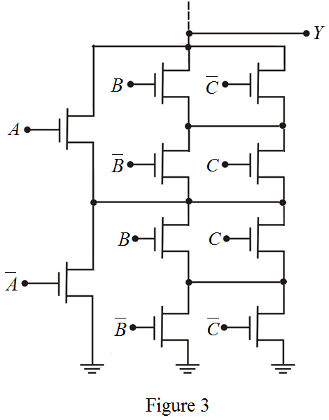
Sketch the complete CMOS realization for active-high output of odd-parity checker.
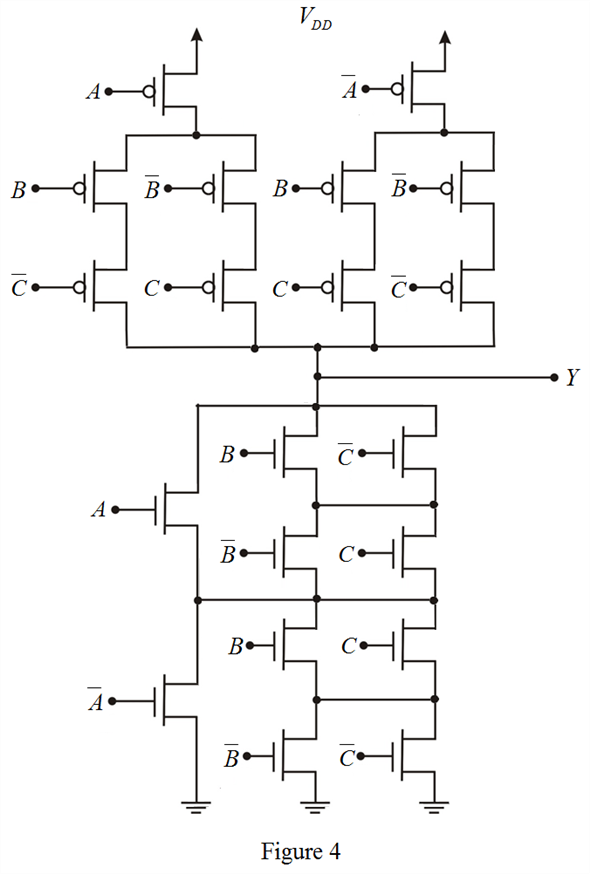
Thus, the complete CMOS realization for active-high output of odd-parity checker is sketched as shown in Figure 4.